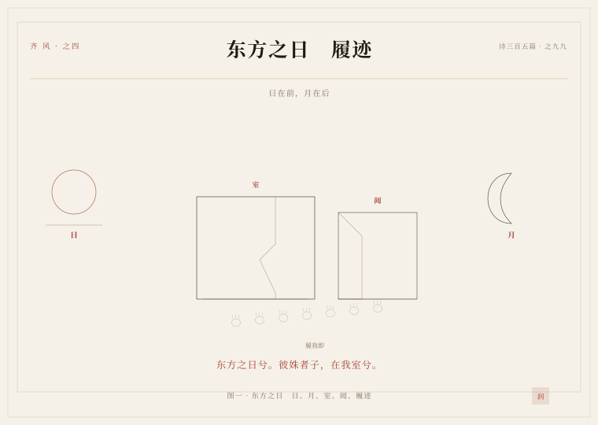
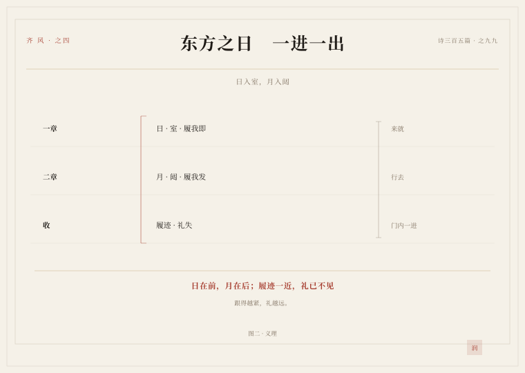

第九十九篇 东方之日
齐风 · 之四 SJ099
朗读 · 普通话
依经文原文朗读，章次不读出；配古琴底乐，不改速、不加拖腔。全库同一音色（豆包 TTS），非播音员录制。
一 解题
诗三判：
- 谁在说：一个被姝女蹑迹相就的人。日入其室，月入其闼；她跟着他的脚印来，又跟着他的脚印去。
- 说什么事：两章只换日/月、室/闼、即/发。日是昼，月是夜；室是内，闼是门内；即是就，发是行。
- 为何编在此：098 写“门外等”，099
写“门内就”。一等一就，礼与奔只隔一道门。
《毛序》：“《东方之日》，刺衰也。君臣失道，男女淫奔，不能以礼化也。”
朱子《诗集传》：“兴也。履，蹑；即，就也。言此女蹑我之迹而相就也。闼，门内也。发，行去也。言蹑我而行去也。”
本库的看法：《东方之日》是一首把“光”写成“迹”的诗。
日、月是光，室、闼是门，履是脚印；全诗只写“跟”。日在前，月在后；履迹一近，礼已不见。
诗不写一句“淫”，只写“在我室”“在我闼”；门内一进，礼就在门外。
先辨五事：“姝”是美好，不是“姝丽”之名；“室”是内室，不是“室家”泛称；“闼”是门内，不是“闼门”重文；“履”是蹑、踏，不是“鞋”；“发”是行、去，不是“头发”。
二 经文
第一章
东方之日兮，彼姝者子，在我室兮。
在我室兮，履我即兮。
第二章
东方之月兮，彼姝者子，在我闼兮。
在我闼兮，履我发兮。
分章：二章，章五句。
三 韵读
- 一章：日、室、即，质部。
- 二章：月、闼、发，月部。
读法：质部短促，月部收；日短而月长，室深而闼浅；韵越收，迹越远。
四 字义与名物
- 东方之日/月：日出东方、月出东方；日喻昼，月喻夜。
- 姝：美好；者子：那个人。
- 室：内室；闼：门内。由室到闼，是由内到门。
- 履：蹑、踏；即：就、靠近；发：行、去。
- 履我即：踩着我的脚印而来就我；履我发：踩着我的脚印而行去。
- 兮：语助；两章五句，末二句叠“在我”，是口气，也是步步近。
五 今译
东方太阳啊，那个美好的人，在我的内室。在我的内室，踩着我的脚印来就我。
东方月亮啊，那个美好的人，在我的门内。在我的门内，踩着我的脚印行去。
六 章旨
- 一章：写“日”与“室”。日光照内室，是昼；履迹相就，是来。
- 二章：写“月”与“闼”。月光照门内，是夜；履迹行去，是去。一来一去，礼皆不见。
- 总收：日在前，月在后；履迹一近，礼已不见。
诗不写“淫”，只写“跟”；跟得越紧，礼越远。
七 诗教
- 兴：以日月起兴。光不是光，是“照见”；照见室闼，才照见无礼。
- 观：观“礼化”。君臣失道于上，男女失礼于下；一国之衰，从门内开始。
- 群：男女相就，本是最私；诗却以日月为证，私事被光一照，就成了公俗。
- 怨：诗里没有怨，只有“履”。履是主动，怨在被动者心里。
八 分寸与边界
- 不可把“履”当鞋。它是蹑迹；一读鞋，诗就成了赠履。
- 不可把“即”当立即。它是就、靠近；一读立即，时间就乱了。
- 不可把“发”当头发。它是行去；一读头发，末句就不通。
- 不可把日/月当实景。它们是兴，是昼夜的框；一读实景，诗就成日记。
- 不可把诗当艳情。它写“礼化”之衰；一读艳情，毛序就没了。
九 存疑
- 诗旨：毛序“刺衰，男女淫奔”；朱子“女蹑我迹而相就”。一刺时，一叙事；本库两存，以“履迹”读。
- “履”：毛传“履，礼也”；朱子“蹑”。一礼一迹，本库从朱子，因下文“即/发”皆行迹。
- “即/发”：毛传“即，就；发，行”；郑笺同。两读一致。
- “室/闼”：室为内室，闼为门内；一说闼为门屏之间。从门内，才见进退。
- 作者与年代：毛序属哀公；朱子不言何公。无确证。
十 跨典
- 《孟子·离娄上》：“男女授受不亲，礼也。”——礼在授受之间；此诗写履迹相就，正见礼废。
- 《礼记·曲礼上》：“男女不杂坐，不同椸枷，不同巾栉。”——男女有别；此诗“在我室/闼”，别已无。
- 《周易·系辞下》：“男女构精，万物化生。”——男女之事，本是生化之始；正因其重，才不可无礼。
- 《诗本音》：二章质、月，见卷五；韵部按古韵推定。
十一 双卡与图
双卡八对：
| 姝（美好） |
姝（姝丽之名） |
| 室（内室） |
室（室家泛称） |
| 闼（门内） |
闼（闼门） |
| 履（蹑、踏） |
履（鞋） |
| 即（就、靠近） |
即（立即） |
| 发（行、去） |
发（头发） |
| 东方之日/月（兴） |
日/月（实景） |
| 履迹（礼之失） |
履迹（艳情） |

图一 · 东方之日 日、月、室、闼

图二 · 东方之日 履迹即/发
读图三处：
- 日月两框：图一左日右月，日光低、月光高；两光不照同一处，一昼一夜。
- 室与闼：图一中室门半开，右闼门只一线；门越开越小，人越进越深。
- 脚印一进一出：图二上“即”下“发”，中间一串脚印，去向往门外；脚印不画鞋，只画迹。